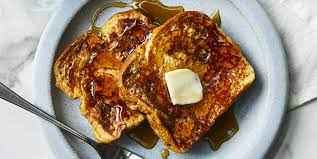

French Toast

Description:
French toast are the most underrated of the three mainstream sweet breakfast foods, despite being the easiest to make and
the favorite of this description's author. The amounts listed in his recipe feed three people. Feel free to scale as you please!
Ingredients:
- 2/3 Cups Milk
- 2 Eggs
- 1 Teaspoon Vanilla Extract
- 1/4 tsp ground cinnamon
- Pinch of Salt
- 6 Thick Slices of White Bread
- 1 Tablespoon Unsalted Butter
Steps:
- Whisk Milk, eggs, vanilla and cinnamon together in a large bowl.
- Lightly butter a griddle or skillet on mediumihigh heat.
- Dunk bread on both sides to your desired moisture.
- Cook until golden brown on both sides. Flip as needed.
- Enjoy!